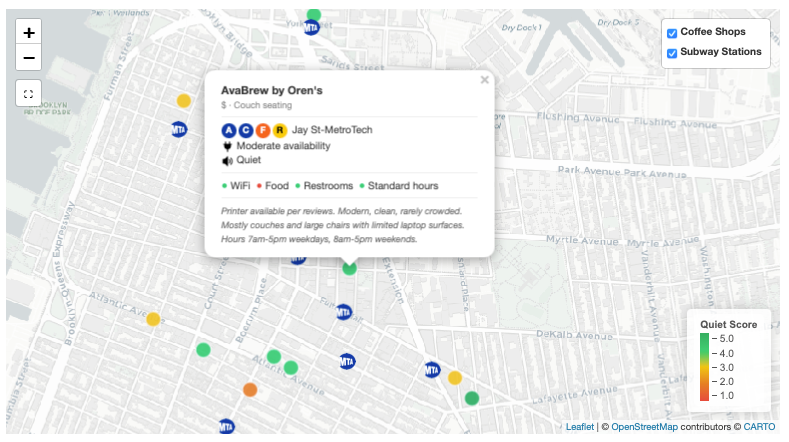

Work-Friendly Coffee Shops:
Downtown Brooklyn & Vicinity

Most mapping tools don't surface the variables that matter for working remotely. This project started with a defined evaluation framework, including six criteria covering noise level, outlet availability, seating type, price, food, and restroom access, applied consistently across 11 coffee shops in Downtown Brooklyn and surrounding neighborhoods.
Every design decision reflects a real constraint in the venue selection problem. MTA subway station overlays address commute friction, not just location. Crosstalk filters mirror how someone actually narrows a decision, with layered constraints across multiple dimensions rather than a single search bar. Color-coded markers by noise level give an at-a-glance read on the most important variable for focused work. Clicking any marker opens a full venue profile with subway access, MTA line badges, outlet rating, noise level, seating, and amenity notes, drawn dynamically from the source dataset.
The current dataset was manually curated and cross-validated. The next version will automate both data collection, including geolocation and address verification, and scoring, using sentiment analysis on review text to evaluate all six criteria directly from source data. This removes the manual curation bottleneck entirely and makes the tool scalable beyond a single neighborhood.